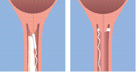

RÉSUMÉ DES CARACTÉRISTIQUES DU PRODUIT
ANSM - Mis à jour le : 06/03/2014
Misodel 200 microgrammes, dispositif de diffusion vaginal
2. COMPOSITION QUALITATIVE ET QUANTITATIVE
Misoprostol...................................................................................................................................... 200 µg
Pour un dispositif de diffusion vaginal.
Excipients à effet notoire : 0,13 mg de hydroxyanisole butylé par dose (voir rubrique 4.4).
Pour la liste complète des excipients, voir rubrique 6.1.
Dispositif de diffusion vaginal.
L’insert en polymère est contenu dans un dispositif de retrait constitué d’un filet se prolongeant par un ruban, inerte, en fibres de polyester. L’insert en polymère est rectangulaire avec des coins arrondis, couleur chamois, semi-transparent, non biodégradable, et mesure approximativement 30 mm de longueur, 10 mm de largeur, et 0,8 mm d’épaisseur.
Misodel gonfle en présence d’humidité.
4.1. Indications thérapeutiques
Misodel est indiqué dans le déclenchement artificiel du travail chez les femmes présentant un col défavorable, à partir de 36 semaines d’aménorrhée, lorsque le déclenchement est cliniquement indiqué.
4.2. Posologie et mode d'administration
Misodel 200 microgrammes est une formulation à libération contrôlée qui libère le misoprostol à un taux d’environ 7 microgrammes/heure sur une période de 24 heures.
La dose maximale recommandée est de un dispositif de diffusion vaginal Misodel (200 microgrammes).
Misodel doit être retiré :
· au démarrage de la phase active de travail (dilatation progressive du col de l’utérus à 4 cm quelle que soit la fréquence des contractions, ou contractions rythmées, fermes, suffisantes entraînant une modification progressive du col survenant à une fréquence de 3 ou plus toutes les 10 minutes et durant au moins 45 secondes),
· si les contractions utérines sont prolongées ou excessives,
· s’il y a des signes de souffrance fœtale,
· si Misodel est en place depuis plus de 24 heures.
Si Misodel est expulsé, ne pas le remplacer.
Dans les cas d’administration consécutive d’ocytocine, un temps d’attente d’au moins 30 minutes est recommandé après le retrait du dispositif de diffusion vaginal (voir rubrique 4.5).
Population pédiatrique
La sécurité et l’efficacité de Misodel chez les jeunes filles enceintes âgées de moins de 18 ans n’ont pas été établies.
Aucune donnée n’est disponible.
Mode d’administration
Misodel ne doit être administré que par des professionnels de santé spécialisés en obstétrique, dans un établissement hospitalier disposant du matériel adéquat pour une surveillance fœtale et utérine régulière. L’état du col de l’utérus doit être examiné avec attention avant toute administration de Misodel. Après insertion, l’activité utérine ainsi que l’état du fœtus doivent être suivis attentivement.
Misodel est conditionné dans un sachet individuel en aluminium, et doit être conservé au congélateur. Il n’est pas nécessaire de décongeler le produit avant utilisation.
Le sachet présente un trait repère sur un côté. L’emballage doit être ouvert en suivant ce trait repère tout le long de l’extrémité supérieure du sachet. Les ciseaux ou objets coupants qui pourraient endommager le dispositif de retrait ne doivent pas être utilisés.
Misodel doit être introduit haut dans le cul-de-sac vaginal postérieur (Figure a). Afin de s’assurer que Misodel demeure in situ, celui-ci doit être tourné selon un angle de 90° et être ainsi disposé transversalement par rapport au cul-de-sac vaginal postérieur (Figure b). Des lubrifiants hydrosolubles peuvent être utilisés afin de faciliter l’insertion si nécessaire.

Figure a. Figure b. Figure c.
Une fois le dispositif de diffusion vaginal inséré, le ruban de retrait peut être coupé avec des ciseaux, tout en s’assurant qu’il y ait suffisamment de ruban à l’extérieur du vagin pour permettre le retrait.
Après insertion, la patiente doit rester allongée pendant 30 minutes, mais peut se déplacer à nouveau par la suite. Il est nécessaire de faire attention à ne pas retirer accidentellement Misodel lors de la toilette ou de l’examen vaginal.
Retrait
Misodel doit être retiré en tirant doucement sur l’extrémité du ruban du dispositif de retrait (Figure c).
Le dispositif de diffusion vaginal ne doit JAMAIS être retiré du dispositif de retrait.
Misodel est une formulation à libération contrôlée qui gonfle en présence d’humidité, entraînant la libération du principe actif. Pendant l’insertion, Misodel gonfle de 2 à 3 fois sa taille d’origine et devient malléable. Après le retrait, il est nécessaire de s’assurer que la totalité du produit (insert et dispositif de retrait) a été retiré du vagin.
· En cas d’hypersensibilité à la substance active ou à l’un des excipients mentionnés à la rubrique 6.1
· Lorsque le travail a démarré
· En cas de souffrance fœtale suspectée ou confirmée avant le déclenchement (par exemple, anomalies de l’enregistrement du rythme cardiaque fœtal (RCF) avec ou sans stimulation, liquide amniotique teinté de méconium, diagnostique ou antécédents d’un état fœtal inquiétant)
· Lorsque des ocytociques et/ou d’autres médicaments inducteurs du travail sont administrés (voir rubrique 4.4)
· En cas d’utérus cicatriciel suspecté ou confirmé résultant d’une précédente chirurgie de l’utérus ou du col, par exemple, accouchement par césarienne
· En cas de malformation de l’utérus (par exemple, utérus bicorne)
· Dans les situations de placenta praevia ou de saignement vaginal inexpliqué après 24 semaines de grossesse.
· En cas d’anomalie de présentation du fœtus
· En cas de signes ou de symptômes de chorioamnionite, à moins qu’un traitement adéquat n’ait été instauré
· Avant 36 semaines de gestation
4.4. Mises en garde spéciales et précautions d'emploi
En cas de contractions utérines prolongées ou excessives, ou s’il existe un risque pour la mère ou l’enfant, le dispositif de diffusion vaginal doit être retiré. Si les contractions utérines excessives se poursuivent après le retrait du dispositif, un traitement tocolytique doit être envisagé.
Chez les femmes atteintes de pré-éclampsie, une souffrance fœtale doit être écartée (voir rubrique 4.3). Les femmes enceintes présentant une pré-éclampsie sévère avec anémie hémolytique, un taux élevé d’enzymes hépatiques, une numération plaquettaire basse (HELLP syndrome) ou toute autre atteinte des organes cibles ou du dispositif nerveux central autre qu’une céphalée modérée n’ont pas été étudiées dans l’étude pivotale de phase III (Étude EXPEDITE ; Miso-Obs-303 ).
Misodel n’a pas été étudié chez les femmes présentant une rupture des membranes depuis plus de 48 heures avant l’insertion de Misodel.
Chez les femmes porteuses d’un Streptocoque du groupe B et nécessitant une antibioprophylaxie, une attention particulière doit être portée au moment opportun pour l’administration de l’antibiothérapie afin d’assurer une protection optimale. Dans l’étude pivotale de phase III (Étude EXPEDITE ; Miso-Obs-303), la durée minimale observée avant l’accouchement a été de 2.95 heures.
Misodel doit être retiré avant l’administration d’ocytocine. Après avoir retiré Misodel, il est nécessaire d’attendre au moins 30 minutes avant d’initier un traitement par ocytocine (voir rubriques 4.2, 4.3, et 4.5).
Misodel a été étudié uniquement dans les cas de grossesses monofœtales avec une présentation céphalique. Aucune étude n’a été effectuée dans les cas de grossesses multiples. Misodel n’a pas été étudié chez les femmes ayant eu plus de 3 accouchements par voie basse après 24 semaines de grossesse.
Misodel ne doit être utilisé que lorsque le déclenchement du travail est cliniquement indiqué.
Misodel doit être utilisé avec précaution chez les patientes présentant un score de bishop modifié (mBS) >4.
La réadministration de Misodel n’est pas recommandée car les effets d’une seconde insertion n’ont pas été étudiés.
Un risque accru de coagulation intravasculaire disséminée du post-partum a été décrit chez des patientes dont le travail avait été déclenché par une méthode physiologique ou pharmacologique.
L’hydroxyanisole butylé est utilisé en tant qu’antioxydant dans le polymère d’hydrogel réticulé. Il n’est présent qu’à l’état de traces dans le produit fini. L’hydroxyanisole butylé peut provoquer des réactions cutanées locales (par exemple, eczéma) ou une irritation des yeux et des muqueuses.
4.5. Interactions avec d'autres médicaments et autres formes d'interactions
Aucune étude d’interaction n’a été réalisée avec Misodel.
L’utilisation concomitante d’ocytociques ou d’autres médicaments inducteurs du travail est contre-indiquée en raison de l’augmentation possible des effets utérotoniques (voir rubriques 4.2, 4.3 et 4.4).
Lors d’essais cliniques, d’autres médicaments contenant des prostaglandines ont été administrés si besoin après le retrait de Misodel, sans effet nocif apparent. Un temps d’attente d’une heure entre le retrait de Misodel et l’administration de ces médicaments a été observé.
Misodel a été étudié chez les femmes enceintes de 36 semaines ou plus.
Misodel ne doit pas être utilisé avant 36 semaines de gestation (voir rubrique 4.3).
Aucune étude n’a été menée pour examiner la quantité d’acide misoprostolique retrouvé dans le colostrum ou le lait maternel après l’utilisation de Misodel.
L’acide misoprostolique a été détecté dans le lait maternel après administration orale de misoprostol sous forme de comprimés.
Après retrait de Misodel, la demi-vie d’élimination plasmatique médiane de l’acide misoprostolique est d’environ 40 minutes. Après 5 demi-vies, c’est-à-dire approximativement 3 heures, les taux d’acide misoprostolique dans le plasma maternel sont négligeables. L’acide misoprostolique peut-être excrété dans le colostrum et le lait maternel, mais selon un taux et une durée d’excrétion attendus comme très limités, ce qui ne devrait pas gêner l’allaitement. Aucun effet sur les nouveaux-nés allaités n’a été observé lors du programme de développement clinique avec Misodel.
Fertilité
Les études de fertilité et de développement embryonnaire précoce menées chez le rat ont mis en évidence un effet indésirable potentiel du misoprostol sur l’implantation, cependant cet effet n’est pas pertinent cliniquement dans l’indication thérapeutique de Misodel (voir rubrique 5.3).
4.7. Effets sur l'aptitude à conduire des véhicules et à utiliser des machines
Sans objet.
Expérience issue des études cliniques
Résumé du profil de sécurité
Le profil d’effets indésirables décrit dans le Tableau 1 est basé sur les données issues de cinq études cliniques menées avec Misodel chez 874 femmes enceintes à terme. Les effets indésirables les plus fréquemment rencontrés ont été les contractions utérines anormales, les troubles du rythme cardiaque fœtal et un travail anormal affectant le fœtus.
Tableau 1 Effets indésirables observés dans les études cliniques
|
Classes de dispositifs d’organes |
Très fréquent (³1/10) |
Fréquent (³1/100 à <1/10) |
Peu fréquent (³1/1 000 à <1/100) |
|
Affections du dispositif nerveux |
|
|
Encéphalopathie hypoxique ischémique* |
|
Affections cardiaques |
|
Troubles du rythme cardiaque fœtal†
|
|
|
Affections respiratoires, thoraciques et médiastinales |
|
|
Dépression respiratoire néonatale* Syndrome de détresse respiratoire néonatale* Tachypnée transitoire du nouveau-né*
|
|
Affections gastro-intestinales |
|
|
Nausées Vomissements
|
|
Affections de la peau et du tissu sous-cutané |
|
|
Eruption cutanée |
|
Affections gravidiques, puerpérales et périnatales |
|
Travail anormal affectant le fœtus†† Présence de méconium dans le liquide amniotique Contractions utérines anormales††† |
Hémorragie de l’antepartum Acidose fœtale* Hémorragie du postpartum Décollement prématuré du placenta Hypertonie utérine
|
|
Affections des organes de reproduction et du sein |
|
|
Prurit génital |
|
Investigations |
|
|
Score d’Apgar faible*
Augmentation de la pression artérielle
|
|
Lésions, intoxications et complications liées aux procédures |
|
|
Rupture utérine |
Ce tableau comprend les effets indésirables recueillis lors des études cliniques Miso-Obs-002, Miso-Obs-003, Miso-Obs-204, Miso-Obs-205 et Miso-Obs-303 (Étude EXPEDITE)
* Effets indésirables néonataux.
†Les troubles du rythme cardiaque fœtal rapportés incluaient rythme cardiaque fœtal anormal, bradycardie fœtale, tachycardie fœtale, absence inexpliquée de variabilité normale, diminution du rythme cardiaque fœtal, décélération du rythme cardiaque fœtal, décélérations précoces ou retardées, décélérations variables, décélérations prolongées.
†† Le critère « travail anormal affectant le fœtus » rapporté incluait tachysystolie utérine ou hypertonie utérine avec trouble du rythme cardiaque fœtal.
†††Les contractions utérines anormales signalées, incluaient tachysystolie utérine.
Dans l’étude pivot menée avec Misodel (Miso-Obs-303 : Étude EXPEDITE), les nouveau-nés ont été suivis durant leur premier mois de vie afin de surveiller les admissions à l’hôpital ou les consultations dans les services d’urgence. Aucun effet indésirable n’a été rapporté après la sortie de l’hôpital.
Déclaration des effets indésirables suspectés
La déclaration des effets indésirables suspectés après autorisation du médicament est importante. Elle permet une surveillance continue du rapport bénéfice/risque du médicament. Les professionnels de santé déclarent tout effet indésirable suspecté via le dispositif national de déclaration : Agence nationale de sécurité du médicament et des produits de santé (Ansm) et réseau des Centres Régionaux de Pharmacovigilance - Site internet: www.ansm.sante.fr.
5. PROPRIETES PHARMACOLOGIQUES
5.1. Propriétés pharmacodynamiques
Mécanisme d’action
Le misoprostol est un analogue synthétique de la prostaglandine E1 (PGE1), un composé ocytocique présent naturellement dans le corps humain. Il a été montré que les prostaglandines des classes F et E augmentent in vitro l’activité collagénase des fibroblastes du col de l’utérus de lapin, et provoquent in vivo la maturation cervicale et la contraction utérine. Ces effets pharmacodynamiques sont considérés comme étant le principal mécanisme d’action responsable de l’effet clinique de Misodel.
Les analogues des PGE sont également responsables d’autres effets, par exemple, la relaxation des muscles bronchiques et trachéaux, l’augmentation de la sécrétion de mucus et la diminution de la sécrétion d’acide et de pepsine dans l’estomac, l’augmentation du débit sanguin rénal, l’augmentation des concentrations circulantes de l’hormone adrénocorticotrope et de la prolactine. Ces effets pharmacodynamiques ne sont pas considérés comme ayant une importance clinique lors d’un traitement de courte durée.
Efficacité et sécurité clinique
L’étude pivot de phase III conduite avec Misodel (Miso-Obs-303 : Étude EXPEDITE), était une étude en double aveugle, randomisée, multicentrique, menée aux Etats-Unis sur 1358 femmes enceintes. Cette étude a comparé l’efficacité et la sécurité de Misodel au dispositif de diffusion vaginal contenant 10 mg de dinoprostone (PROPESS). Les femmes pares et nullipares avec un col défavorable (score modifié de Bishop ≤ 4) ont été randomisées afin de recevoir Misodel ou PROPESS jusqu’à 24 heures de traitement. Le critère principal d’efficacité était le délai jusqu’à l’accouchement par voie basse et le critère principal de sécurité était le taux d’accouchements par césarienne.
Le tableau 2 présente les données des principaux critères primaires et secondaires d’évaluation de cette étude.
Tableau 2 Miso-Obs-303 : Résultats des principaux critères d’évaluation de l’étude EXPEDITE
|
|
Misodel 200 mcg (N=678) |
PROPESS 10mg (N=680) |
Valeur de p |
|
Délai médian jusqu’à l’accouchement par voie basse (heures)*
Femmes nullipares
Femmes pares |
21.5h**
29.2 h (n=441)
13.4 h (n=237) |
32.8h**
43.1 h (n=451)
20.1 h (n=229) |
p < 0.001
p < 0.001
p < 0.001 |
|
Incidence des accouchements par césarienne (n %)
Femmes nullipares
Femmes pares |
176 (26.0%)
152 (34.5%)
24 (10.1%) |
184 (27.1%)
168 (37.3%)
16 (7.0%) |
p = 0.646
p = 0.386
p = 0.226 |
|
Délai médian jusqu’à l’accouchement* (voie basse et césarienne) (heures) |
18.3h† |
27.3h† |
p < 0.001 |
|
Délai médian global jusqu’au début de la phase active de travail (heures)* |
12.1h†† |
18.6h†† |
p < 0.001 |
|
Nombre total de sujets ayant reçu de l’ocytocine avant l’accouchement [n (%)] |
324 (48.1%) (N=674) |
497 (74.1%) (N=671) |
p < 0.001 |
* Les sujets ayant accouché par césarienne, étant sortis de l’hôpital avant l’accouchement ou ayant retiré leur consentement lors de la première hospitalisation ont été censurés en utilisant l’intervalle de temps le plus grand depuis l’administration du médicament jusqu’à l’accouchement par césarienne ou jusqu’à la sortie de l’hôpital (estimations de Kaplan Meier).
** Délai médian jusqu’à l’accouchement par voie basse (sujets ayant accouché par voie basse uniquement) lors de la première hospitalisation: Misodel, 200 mcg: 16.6 h; PROPESS 10 mg: 25.1 h
† Délai médian jusqu’à l’accouchement lors de la première hospitalisation: Misodel, 200 mcg: 18.2 h; PROPESS 10 mg: 27.2 h
†† Délai médian jusqu’au début de la phase active de travail lors de la première hospitalisation: Misodel, 200 mcg: 12.0 h; PROPESS 10 mg: 18.0 h
Population pédiatrique
L’Agence européenne des médicaments a accordé une dérogation à l’obligation de soumettre les résultats d’études réalisées avec Misodel dans tous les sous-groupes de la population pédiatrique dans le déclenchement du travail, dans l’indication autorisée (voir rubrique 4.2 pour les informations concernant l’usage pédiatrique).
5.2. Propriétés pharmacocinétiques
Chez les femmes non-enceintes, le dispositif de diffusion vaginal Misodel a un taux de libération moyen in vivo d’environ 7 microgrammes/heure sur une période de 24 heures. Dans une étude menée chez 24 femmes enceintes à terme, on a observé une Cmax médiane de 45.8 pg/mL avec un Tmax médian de 4 heures. La demi-vie terminale médiane (après retrait de l’insert) a été approximativement de 40 minutes.
La liaison de l’acide misoprostolique aux protéines sériques est inférieur à 90% et indépendante de la concentration aux doses thérapeutiques.
5.3. Données de sécurité préclinique
Aucun effet tératogène n’a été observé chez le rat à des doses allant jusqu’à 10 mg/kg/jour. Chez le lapin, une augmentation du nombre de fœtus présentant des côtes supplémentaires a été observée à la dose de 1 mg/kg/jour, cette dose étant probablement associée à une toxicité maternelle. Chez la souris, à des doses proches de la dose létale pour le fœtus, des malformations fœtales diverses ont été observées. L’effet indésirable potentiel du misoprostol sur l’implantation a été mis en évidence et la dose sans effet toxique observé a été définie comme étant égale à 0.4 mg/kg/jour suite aux études de fertilité et de développement embryonnaire précoce chez le rat. Les effets ci-dessus rencontrés chez la souris et le rat n’ont pas de conséquence pour l’utilisation de Misodel, celui-ci étant contre-indiqué avant 36 semaines de gestation.
Les études de toxicité péri- et post-natales chez le rat ont mis en évidence une dose sans effets observés sur les paramètres de la reproduction égale à 1.0 mg/kg/jour de misoprostol par voie orale. En comparant l’exposition chez le rat et les études de cinétique chez l’homme, un facteur de sécurité égal à 20 a été établi pour le misoprostol lorsqu’il est administré à une dose de 200 microgrammes sous la forme d’une version miniature du dispositif de diffusion vaginal du misoprostol.
Aucun signe d’irritation locale au niveau du vagin ou du col de l’utérus n’a été observé suite à l’administration de Misodel chez les rates gestantes.
D’après les tests in vitro et in vivo conventionnels et les données de toxicité publiées, il n’y a pas de risque particulier pour l’Homme en ce qui concerne la toxicité systémique des polymères d’hydrogels, du dispositif de retrait en polyester et des excipients. Les polymères d’hydrogels et le dispositif de retrait en polyester sont constitués de composés inertes dotés d’une bonne tolérance locale.
Hydroxyanisole butylé
Dispositif de retrait en polyester (ruban de polyester tissé)
Sans objet.
3 ans.
6.4. Précautions particulières de conservation
A conserver au congélateur (entre -10°C et -25°C). Il n’est pas nécessaire de décongeler le produit avant utilisation.
6.5. Nature et contenu de l'emballage extérieur
1 x dispositif de diffusion vaginal.
5 x dispositifs de diffusion vaginal.
5 x dispositifs de diffusion vaginal (emballage multiple).
Chaque dispositif de diffusion vaginal est contenu dans un sachet individuel constitué de film d’aluminium thermosoudé et contenant un dessicant, et emballé dans une boîte.
Toutes les présentations peuvent ne pas être commercialisées.
6.6. Précautions particulières d’élimination et de manipulation
Misodel doit être retiré du congélateur et de son sachet en aluminium juste avant son insertion.
Tout médicament non utilisé ou déchet doit être éliminé conformément à la règlementation en vigueur.
Après retrait, le produit doit être éliminé dans sa totalité.
7. TITULAIRE DE L’AUTORISATION DE MISE SUR LE MARCHE
7 rue Jean-Baptiste Clément
94250 Gentilly
France
8. NUMERO(S) D’AUTORISATION DE MISE SUR LE MARCHE
· 586 168-1 ou 34009 586 168 1 5 : dispositif de diffusion vaginal en sachet (aluminium) : boîte de 1.
· 586 169-8 ou 34009 586 169 8 3 : dispositif de diffusion vaginal en sachet (aluminium) : boîte de 5.
· 586 170-6 ou 34009 586 170 6 5 : dispositif de diffusion vaginal en sachet (aluminium) : boîte de 5 (emballage multiple).
9. DATE DE PREMIERE AUTORISATION/DE RENOUVELLEMENT DE L’AUTORISATION
[à compléter par le titulaire]
10. DATE DE MISE A JOUR DU TEXTE
[à compléter par le titulaire]
Sans objet.
12. INSTRUCTIONS POUR LA PREPARATION DES RADIOPHARMACEUTIQUES
Sans objet.
Liste I
Réservé à l’usage hospitalier